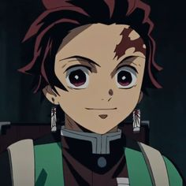
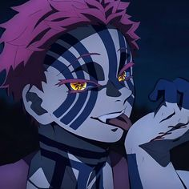
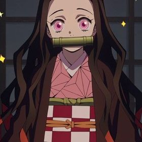

Personagens de demonslayer!
Aqui você encontrará informações sobre os melhores animes do momento, seus personagens, novidades e muito mais!
| Personagem | Nome | |
|---|---|---|
|  | Tanjiro Kamado | Tanjiro Kamado (竈門かまど 炭たん治じ郎ろう Kamado Tanjirō?) é o protagonista principal de Demon Slayer: Kimetsu no Yaiba. Ele é um Caçador de Oni do Esquadrão de Caçadores de Onis, que se juntou para encontrar um remédio para transformar sua irmã, Nezuko Kamado, que foi transformada em um Oni, de volta em um humano. Antes de se tornar um Caçador de Oni, sua família foi massacrada pelo Rei dos Onis, Muzan Kibutsuji, enquanto sua irmã mais nova, Nezuko, foi transformada em uma Oni |
|  | Akaza | Akaza é um Demônio forte, teimoso e impulsivo que gostava de lutar, especialmente contra Caçadores de Demônios fortes em K imetsu no Yaiba – Demon Slayer. Ele desprezava qualquer um que considerasse fraco, mas genuinamente respeitava aqueles que eram fortes aos seus olhos, independentemente de sua raça. Uma vez que conheceu alguém que considera forte, ele exige saber seu nome e não iria parar até que descobrisse, ele se lembra de todos os nomes que guardou na memória c omo um tributo à força deles. |
|  | Nezuko Kamado | Nezuko Kamado é uma das principais personagens de Demon Slayer: Kimetsu no Yaiba. Quando a conhecemos, ela é apenas uma humana vivendo com sua mãe e irmãos, mas j á no primeiro episódio sua vida muda completamente… A irmã mais nova de Tanjiro agora é um oni cheia de mistérios sobre seu próprio poder e sobrevivência. |